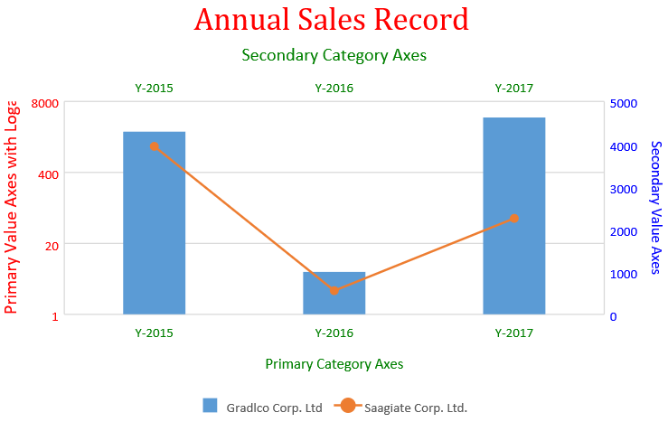

Plotting data with large differences in values often leads to incorrect data analysis and may even fail to showcase a completely readable chart. SpreadJS allows users to customize the minimum and the maximum scale values of the vertical axis (also called value axis). Using this feature, users can change the value axis to logarithmic scale in order to meet their specific analytical requirements while formatting charts.
This feature is useful in the following scenarios:
Example - Let's say you want to compare sales revenues of different product-based companies A and B, where A refers to a large company that is growing substantially but slowly and B refers to a small company that is growing quickly.
Now, if the sales revenues of both the companies are depicted in the same line chart, it will just compare the absolute data values and the readability of the chart will decrease to a great extent. Further, it will be difficult to rule out that the smaller firm (B) is growing comparatively faster than the larger one (A). In such a sceanrio, using log scales helps business analysts to constantly track the sales of competitors in an easy and effective way.

The scaling property of the IAxis interface allows users to get or set the axes of the chart. The LogBase can be configured to various options - "Null", "10" and "2". While changing the vertical axis to logarithmic axes, the following rules must be kept in mind:
The following table lists the different log base options that can be used while changing the vertical axis to log scale.
| LogBase | Description |
| Null | This option is used to disable the log scale. |
| 10 | This option is used to customize the log scale with 10 base. |
| 2 | This option is used to customize the log scale with 2 base. |
All chart types containing at least one value axis support logarithmic scaling except Histogram charts, Box & Whisker charts, and Waterfall charts.
Note: The following limitation must be kept in mind while working with log scales in charts:
This example code depicts a relative comparison of sales revenues of two different companies using logarithmic scaling in the chart.
| JavaScript |
Copy Code
|
|---|---|
var activeSheet = spread.getActiveSheet(); activeSheet.suspendPaint(); // Prepare data for chart activeSheet.setValue(0, 1, "Y-2015"); activeSheet.setValue(0, 2, "Y-2016"); activeSheet.setValue(0, 3, "Y-2017"); activeSheet.setValue(0, 4, "Y-2018"); activeSheet.setValue(0, 5, "Y-2019"); activeSheet.setValue(1, 0, "Gradlco Corp. Ltd"); activeSheet.setValue(2, 0, "Saagiate Corp. Ltd."); activeSheet.setColumnWidth(0, 120); for (var r = 1; r <= 2; r++) { for (var c = 1; c <= 5; c++) { activeSheet.setValue(r, c, parseInt(Math.random() * 5000)); } } // Add columnClustered chart chart_columnClustered = activeSheet.charts.add('chart_columnClustered', GC.Spread.Sheets.Charts.ChartType.columnClustered, 50, 100, 600, 400); var series = chart_columnClustered.series(); series.add({ chartType: GC.Spread.Sheets.Charts.ChartType.columnClustered, axisGroup: GC.Spread.Sheets.Charts.AxisGroup.primary, name: "Sheet1!$A$2", xValues: "Sheet1!$B$1:$F$1", yValues: "Sheet1!$B$2:$D$2" }); series.add({ chartType: GC.Spread.Sheets.Charts.ChartType.lineMarkers, axisGroup: GC.Spread.Sheets.Charts.AxisGroup.secondary, name: "Sheet1!$A$3", xValues: "Sheet1!$B$1:$F$1", yValues: "Sheet1!$B$3:$D$3" }); var axes = chart_columnClustered.axes(); axes.primaryCategory.style.color = 'green'; axes.primaryCategory.title.color = 'green'; axes.primaryCategory.title.text = 'Primary Category Axes'; axes.primaryValue.style.color = 'red'; axes.primaryValue.title.color = 'red'; axes.primaryValue.title.text = 'Primary Value Axes with Logarithmic Scaling'; axes.primaryValue.title.fontSize = 16; axes.primaryValue.scaling = { logBase: 20 }; axes.secondaryCategory.visible = true; axes.secondaryCategory.style.color = 'green'; axes.secondaryCategory.title.color = 'green'; axes.secondaryCategory.title.text = 'Secondary Category Axes'; axes.secondaryCategory.title.fontSize = 16; axes.secondaryValue.style.color = 'blue'; axes.secondaryValue.title.color = 'blue'; axes.secondaryValue.format = 'General'; axes.secondaryValue.title.text = 'Secondary Value Axes'; chart_columnClustered.axes(axes); // Configure Chart Title var title = chart_columnClustered.title(); title.text = "Annual Sales Record"; title.fontFamily = "Cambria"; title.fontSize = 28; title.color = "Red"; chart_columnClustered.title(title); activeSheet.resumePaint(); |
|